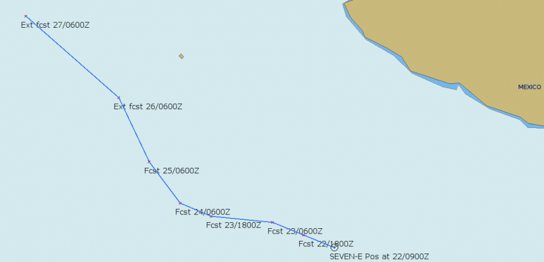
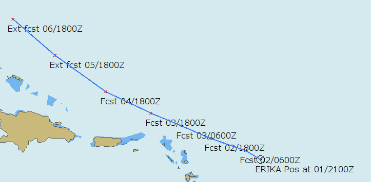

Planning Data
The examples shown on this page are all suitable for import as layers, as that will prevent any waypoint from being moved by mistake.
Need to see some offshore weather observations?

NOAAs NDBC site gives access to a lot of offshore observations from buoys and ships worldwide.
To easily visualize all this data the “ShipWxRep” script transform a limited set of all the available data into gpx waypoints. The format, as seen above is “wind direction, wind speed, time for observation, and air pressure”. This can be helpful when evaluating the accuracy of grib files, even though the best tool in this respect probably is a calibrated digital barometer.
Plotting Miami Tropical Forecast Advisories.
If you only have access to low bandwidth Internet, this script is a way to quickly plot the contents of, for example, an email containing the forecast advisory. In any case, it is a good idea to have the forecast track of a tropical system available where you normally do your navigation and planning.


Download the gpx scripts here. The old great circle script is included. For some help run each script without arguments.